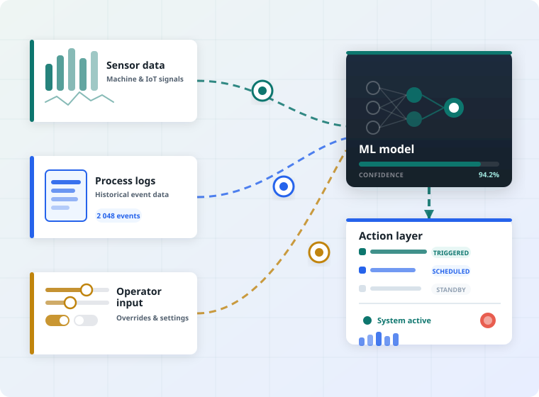
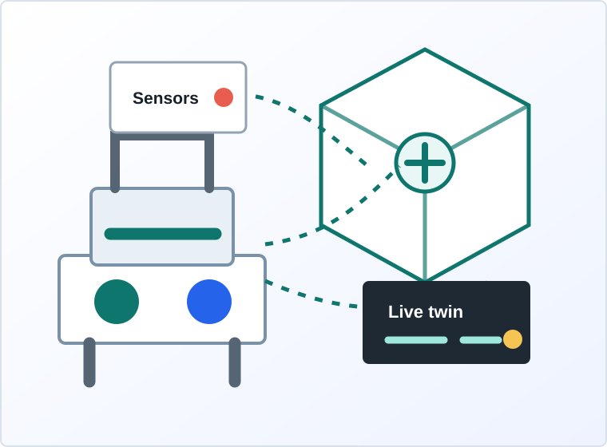

AI & ML Solutions
Predictive maintenance, demand forecasting, anomaly detection, quality intelligence, process recommendations, and decision support systems.
View AI & ML productsAI, ML, Digital Twins, Automation Consulting
We help organisations automate operations, predict downtime, build digital twins, and improve human and machine efficiency through practical AI and engineering solutions.
Live operations graphic
This live visual represents how lean2automate connects machine data, human workflows, AI models, and digital twin feedback into one operating loop.
Built for real operations
lean2automate works across sectors where repetitive manual work, machine downtime, process delays, and disconnected systems slow teams down. Our work combines consulting, data science, integration, and automation engineering.
Core solution areas
Predictive maintenance, demand forecasting, anomaly detection, quality intelligence, process recommendations, and decision support systems.
View AI & ML productsVirtual replicas of machines, production lines, facilities, or workflows to simulate performance, monitor assets, and identify downtime risks before they become costly.
View digital twin productWorkflow audits, automation opportunity mapping, ROI modelling, process redesign, and adoption planning.
Dashboards, integrations, data pipelines, AI assistants, monitoring tools, and automated task flows.
AI & ML solutions
We design AI and machine learning systems that sit close to business outcomes: fewer interruptions, faster decisions, sharper quality control, better planning, and stronger throughput.
Detect early signals of failure and reduce unplanned machine downtime.
Identify unusual patterns in production, quality, process, or transactional data.
Recommend smarter routing, scheduling, staffing, and resource allocation.
Automate knowledge work, reporting, documentation, support, and approvals.


Digital twins solution
Our digital twin solutions connect live data, process logic, and visual operating models so teams can understand performance, test scenarios, and make confident improvements.
Industries served
Predictive maintenance, line optimization, quality checks, digital twin factories.
Route planning, warehouse automation, tracking, dispatch intelligence.
Scheduling, documentation, operational workflows, resource optimization.
Demand forecasting, inventory automation, customer support, order management.
Reconciliation, approval automation, reporting, anomaly and risk detection.
Admissions, student engagement, administrative automation, analytics.
Delivery model
Audit workflows, data, systems, machines, and pain points.
Prioritize AI, ML, digital twin, and automation opportunities.
Develop integrations, models, dashboards, automations, and controls.
Track outcomes, tune models, train users, and scale what works.
Freelancer network
We welcome freelance engineers, data scientists, AI builders, process consultants, designers, analysts, and integration specialists for project-based work.
Register as freelancerContact
AI, ML, digital twins, automation consulting, technical delivery, downtime reduction.
Discovery workshops, pilots, implementation sprints, managed optimization.